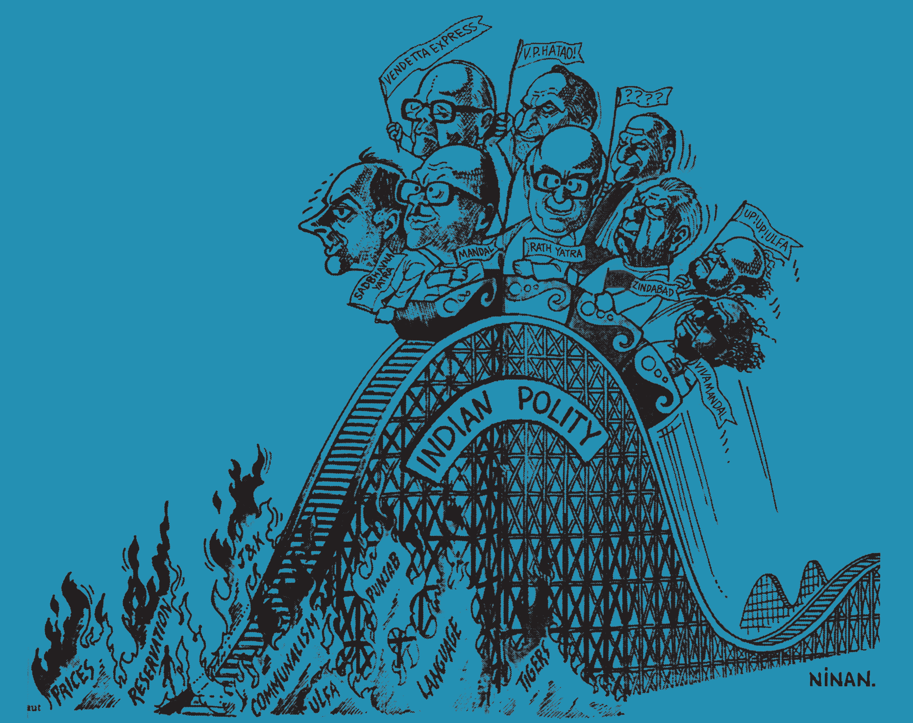

अध्याय 15: भारतीय राजनीति: नए बदलाव
(Recent Developments in Indian Politics) - NCERT Restructured Notes
1. 1980 के दशक के आखिर के पाँच मुख्य बदलाव (पृष्ठभूमि)
प्रिय विद्यार्थियों, 1980 के दशक के अंतिम वर्षों में भारत ने कई बड़े राजनीतिक, आर्थिक और सामाजिक बदलाव देखे। इन बदलावों ने आगामी दशकों की भारतीय राजनीति को एक नया आकार दिया। मुख्य रूप से निम्नलिखित पाँच बड़े बदलाव हुए:
- कांग्रेस प्रणाली का अंत (End of Congress System): 1989 के चुनावों में कांग्रेस की करारी हार हुई और उसका एकाधिकार समाप्त हो गया।
- मंडल मुद्दा (Mandal Commission): राष्ट्रीय मोर्चा सरकार द्वारा ओबीसी (OBC) वर्ग को 27% आरक्षण देने के निर्णय से देश भर में व्यापक सामाजिक-राजनैतिक उभार आया।
- नई आर्थिक नीति (LPG - 1991): गंभीर भुगतान संकट से उबरने के लिए भारत ने उदारीकरण, निजीकरण और वैश्वीकरण का रास्ता अपनाया।
- अयोध्या विवाद (Ayodhya Agitation): राम जन्मभूमि आंदोलन और बाबरी मस्जिद के ताले खुलने से सांप्रदायिकता व धर्मनिरपेक्षता पर एक नई राष्ट्रव्यापी बहस शुरू हुई।
- राजीव गांधी की हत्या (Rajiv Gandhi Assassination): मई 1991 में लिट्टे द्वारा की गई उनकी हत्या से कांग्रेस के नेतृत्व में बड़ा बदलाव आया।

2. गठबंधन का दौर (Era of Coalition - 1989 से 1998)
1989 के बाद केंद्र में **'बहु-दलीय व्यवस्था'** (Multi-party system) का वास्तविक युग शुरू हुआ। अब किसी एक दल को पूर्ण बहुमत मिलना कठिन हो गया और क्षेत्रीय दल सरकार बनाने में 'किंगमेकर' बन गए।

संयुक्त मोर्चा सरकारें (United Front Governments):
कांग्रेस को सत्ता से बाहर रखने के लिए 1996 में **संयुक्त मोर्चा** गठबंधन बना, जिसमें जनता दल और कई क्षेत्रीय पार्टियाँ शामिल थीं। इस सरकार को कांग्रेस और वामपंथियों ने बाहर से समर्थन दिया। इस काल में एच.डी. देवेगौड़ा और आई.के. गुजराल देश के प्रधानमंत्री बने।


3. मंडल आयोग और अन्य पिछड़े वर्ग (OBC) का राजनीतिक उदय
1990 के दशक में भारतीय समाज और राजनीति को गहरे रूप से प्रभावित करने वाला सबसे बड़ा मुद्दा **'मंडल आयोग की सिफारिशों'** को लागू करना था। मोरारजी देसाई सरकार द्वारा 1978 में बिंदेश्वरी प्रसाद मंडल की अध्यक्षता में इस आयोग का गठन किया गया था।

बिंदेश्वरी प्रसाद मंडल (B. P. Mandal) (1918-1982)
जीवन परिचय व योगदान: बिहार के प्रमुख समाजवादी नेता और सांसद। वे 1968 में बिहार के मुख्यमंत्री भी रहे। उन्होंने द्वितीय पिछड़ा वर्ग आयोग (मंडल आयोग) की अध्यक्षता की, जिसने अन्य पिछड़े वर्गों (OBC) को 27% आरक्षण देने की सिफारिश की। यह सिफारिश 1990 में लागू की गई, जिसने भारतीय राजनीति को बदल दिया।
- मंडल आयोग की सिफारिशें: आयोग ने 1980 में अपनी रिपोर्ट सौंपी और सिफारिश की कि अनुसूचित जातियों (SC) और जनजातियों (ST) के अलावा समाज में एक बड़ा वर्ग **'अन्य पिछड़ा वर्ग' (OBC)** है, जो शैक्षणिक और सामाजिक रूप से पिछड़ा है। इन्हें केंद्र सरकार की नौकरियों और शिक्षण संस्थाओं में **27% आरक्षण** मिलना चाहिए।


दलित चेतना का उदय और बहुजन समाज पार्टी
1980 के दशक में ही शोषित और वंचित जातियों के बीच एक मजबूत राजनीतिक चेतना का प्रसार हुआ। कांशीराम के कुशल नेतृत्व में **बसपा (BSP)** का गठन हुआ, जिसने दलितों, पिछड़ों और अल्पसंख्यकों (बहुजन) को सत्ता का हिस्सेदार बनाया।

कांशीराम (Kanshi Ram) (1934-2006)
जीवन परिचय व योगदान: बहुजन समाज के अधिकारों के लिए संघर्ष करने वाले प्रमुख राजनेता और विचारक। उन्होंने 'बामसेफ' (BAMCEF), DS4 और अंततः 'बहुजन समाज पार्टी' (BSP) की स्थापना की। उन्होंने दलितों, पिछड़ों और अल्पसंख्यकों (बहुजन) को संगठित कर भारतीय राजनीति में दलित सशक्तीकरण की एक नई लहर पैदा की।
4. सांप्रदायिकता, धर्मनिरपेक्षता और अयोध्या विवाद
1980 के दशक के उत्तरार्ध में भारत में धर्मनिरपेक्षता (Secularism) और सांप्रदायिक सौहार्द को लेकर एक नया राजनैतिक विवाद खड़ा हुआ, जिसे **'अयोध्या विवाद'** या राम जन्मभूमि-बाबरी मस्जिद विवाद कहा जाता है।
शाह बानो मामला (1985): सुप्रीम कोर्ट द्वारा एक तलाकशुदा मुस्लिम महिला (शाह बानो) को गुजारा भत्ता देने के आदेश को जब राजीव गांधी सरकार ने रूढ़िवादी मुस्लिमों के दबाव में आकर संसद से कानून बनाकर पलट दिया, तो भाजपा ने सरकार पर 'अल्पसंख्यक तुष्टीकरण' का आरोप लगाया।
बाबरी मस्जिद विध्वंस (6 दिसंबर 1992): फैजाबाद जिला अदालत के आदेश पर ताला खोले जाने के बाद लालकृष्ण आडवाणी के नेतृत्व में 'राम रथ यात्रा' शुरू हुई, जिसके फलस्वरूप 6 दिसंबर 1992 को कारसेवकों ने विवादित ढांचे को गिरा दिया। इससे सांप्रदायिक दंगे भड़के और देश की राजनीति में गहरा ध्रुवीकरण हो गया।
न्यायालय का फैसला: नवंबर 2019 में सर्वोच्च न्यायालय ने ऐतिहासिक फैसला सुनाते हुए विवादित भूमि राम मंदिर के लिए और मस्जिद निर्माण के लिए मुस्लिम पक्ष को 5 एकड़ जमीन अलग से प्रदान की।
5. गठबंधन राजनीति (NDA/UPA) और एक नई सर्वसम्मति का उदय
1998 के बाद भारतीय गठबंधन राजनीति दो बड़े धड़ों में बंट गई—एनडीए (NDA) और यूपीए (UPA)।
एनडीए (NDA - भाजपा समर्थित): अटल बिहारी वाजपेयी के नेतृत्व में एनडीए ने 1999-2004 तक स्थिर सरकार चलाई। वाजपेयी जी ने दर्शाया कि 'गठबंधन धर्म' का पालन कर देश का विकास संभव है।

यूपीए (UPA - कांग्रेस समर्थित): 2004 के चुनावों में कांग्रेस के नेतृत्व में यूपीए गठबंधन सत्ता में आया और डॉ. मनमोहन सिंह प्रधानमंत्री बने। इस सरकार ने 2014 तक शासन किया।

डॉ. मनमोहन सिंह (1932)
जीवन परिचय व योगदान: भारत के प्रसिद्ध अर्थशास्त्री, 1991 के ऐतिहासिक आर्थिक सुधारों के सूत्रधार वित्त मंत्री, और 2004 से 2014 तक देश के प्रधानमंत्री। उनके कार्यकाल (UPA-1 व UPA-2) में आरटीआई (RTI), मनरेगा (MGNREGA) और भारत-अमेरिका परमाणु समझौता जैसे ऐतिहासिक कार्य और जनकल्याणकारी कानून लागू किए गए।

1. **2004 और 2009 का चुनाव (UPA का दबदबा):** इन चुनावों में कांग्रेस के नेतृत्व वाला यूपीए (UPA) सबसे बड़ा गठबंधन बनकर उभरा और छोटे दलों की मदद से 272+ का जादुई आंकड़ा हासिल कर सरकार बनाई।
2. **2014 और 2019 का चुनाव (NDA और 'भाजपा प्रभुत्व' की वापसी):** इन चुनावों में भारी बदलाव आया जब नरेन्द्र मोदी के नेतृत्व में अकेले भाजपा ने पूर्ण बहुमत (2014 में 282 और 2019 में 303 सीटें) प्राप्त किया, जिसने देश को 30 साल बाद गठबंधन राजनीति की अस्थिरता से बाहर निकाला।
भारतीय राजनीति में उभरती चार सर्वसम्मति:
1990 के बाद विपरीत विचारधारा वाले दलों के बीच बुनियादी मुद्दों पर एक मौन सहमति बनी:
- नई आर्थिक नीतियों पर सहमति: उदारीकरण के आर्थिक लाभों को सभी दल स्वीकार करते हैं।
- ओबीसी आरक्षण का समर्थन: पिछड़े वर्गों को आरक्षण देने की नीति पर अब सभी राजनीतिक दल सहमत हैं।
- क्षेत्रीय दलों की बढ़ती भूमिका: केंद्र सरकार चलाने में राज्यों के क्षेत्रीय दलों की भागीदारी को राष्ट्रीय स्तर पर मान्यता मिल चुकी है।
- विचारधारा के बजाय व्यावहारिक राजनीति (Pragmatism): अब सरकार बनाने के लिए दल विचारधारा की जगह विकास और रणनीतिक समझौतों को प्राथमिकता देते हैं।
भाग 6: मेगा प्रश्न बैंक (Board Exam Special Q&A)
अति-लघु उत्तरीय प्रश्न (1 अंक)
- प्रश्न: भारतीय राजनीति में 'गठबंधन युग' की शुरुआत किस वर्ष के आम चुनावों से मानी जाती है?
उत्तर: 1989 के लोकसभा चुनावों से। - प्रश्न: मंडल आयोग की स्थापना किस वर्ष और किस प्रधानमंत्री के शासनकाल में हुई थी?
उत्तर: 1978 में, प्रधानमंत्री मोरारजी देसाई के शासनकाल में।
लघु उत्तरीय प्रश्न (4 अंक)
- प्रश्न: 1991 की 'नई आर्थिक नीति' (NEP) के तीन प्रमुख आधार क्या थे?
उत्तर: उदारीकरण (Liberalization), निजीकरण (Privatization) और वैश्वीकरण (Globalization)।
अध्याय 15 का 'गुरुमंत्र' (Master Revision Summary)
- 1. 1989 के चुनाव ने कांग्रेस के एकाधिकार का अंत कर बहु-दलीय गठबंधन के दौर (NDA/UPA) की शुरुआत की।
- 2. मंडल आयोग (B.P. Mandal) ने पिछड़ों (OBC) को 27% आरक्षण देकर सामाजिक न्याय की शुरुआत की।
- 3. 2014 में नरेन्द्र मोदी के नेतृत्व में भाजपा ने 30 साल बाद पहली बार 'पूर्ण बहुमत' की सरकार बनाकर नया इतिहास रचा।
🗳️ मतदान प्रक्रिया: वोट कैसे डालें? (How to Cast a Vote)
स्वतंत्र और निष्पक्ष चुनाव (Free and Fair Elections) हमारे लोकतंत्र की सबसे बड़ी ताकत हैं। भारत का प्रत्येक नागरिक जो 18 वर्ष या उससे अधिक आयु का है, उसे मतदान का अधिकार प्राप्त है। मतदान केंद्रों पर यह प्रक्रिया किस प्रकार संपन्न होती है, इसे पुस्तक में दिए गए निम्नलिखित चार्ट के माध्यम से समझाया गया है:

1. **प्रथम मतदान अधिकारी:** मतदाता सूची में नाम और पहचान पत्र (Voter ID) की जाँच करता है।
2. **द्वितीय मतदान अधिकारी:** मतदाता की बाएँ हाथ की तर्जनी उंगली पर **अमिट स्याही (Indelible Ink)** लगाता है, हस्ताक्षर लेता है और एक पर्ची जारी करता है।
3. **तृतीय मतदान अधिकारी:** पर्ची लेकर मतदाता को वोट डालने के लिए वोटिंग कम्पार्टमेंट (Voting Compartment) की ओर जाने की अनुमति देता है।
4. **EVM / VVPAT:** मतदाता वोटिंग मशीन (EVM) पर अपनी पसंद के उम्मीदवार के सामने का **नीला बटन दबाकर** वोट डालता है। वीवीपीएटी (VVPAT) मशीन की खिड़की में 7 अखंडता की पुष्टि के लिए मतदाता पर्ची निकलती है।